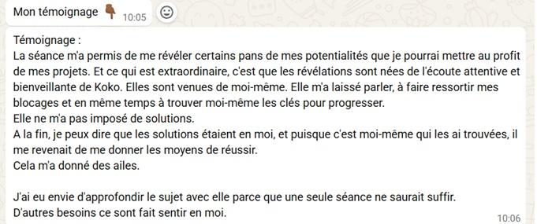
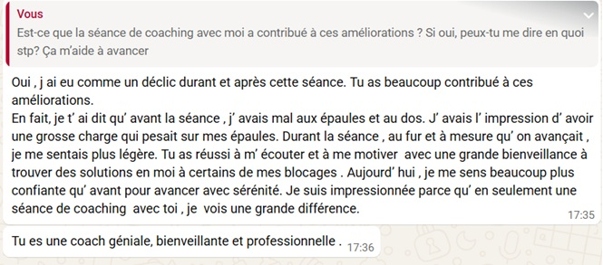
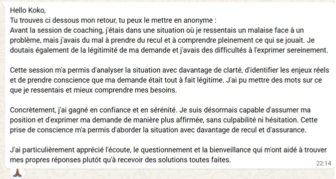

Les posts LinkedIn de Koko m'ont orientée vers elle. Lors de notre dernière session, j'ai pris conscience que j'avais de la valeur. Le déclic le plus concret : j'ai arrêté de faire le travail des autres. Cet accompagnement m'a permis de changer de mindset et de posture.
J'avais déjà essayé un coaching qui n'avait pas marché. Ce qui m'a décidé : Koko comprend ces expériences de l'intérieur. Aujourd'hui, j'hésite moins. Je n'ai plus besoin de me transformer en quelqu'un d'autre.
La séance sur la posture m'a complètement bluffé. J'ai réalisé que je faisais des choses qui ont de la valeur. Je peux avoir des objectifs et rêver.
J'ai appris à formuler mes idées, à poser des limites avec bienveillance. Ma relation avec mon responsable a changé, et la qualité de mes interactions avec toute l'équipe aussi.
Après cette séance, j'ai pris mon courage à deux mains et ça a tout changé. « Fonce ! 😊 »
Koko a ce don d'instaurer la confiance, puis de creuser jusqu'aux questions qui dérangent, celles qu'on esquive d'habitude. « Vas-y. »
J'ai retrouvé de la clarté et eu des prises de conscience qui vont changer ma manière de vivre les choses. Je recommande fortement.
Au premier abord, c'est déconcertant ! Puis c'est devenu clair : j'ai fait le lien entre mes explorations et des sujets plus profonds.
Des retours spontanés, reçus après les séances, partagés avec l'accord de leurs auteur·es.

📱 temoignage-wa-1.jpg
📱 temoignage-wa-2.jpg
📱 temoignage-wa-3.jpgCLIQUE SUR UN MESSAGE POUR L'AGRANDIR